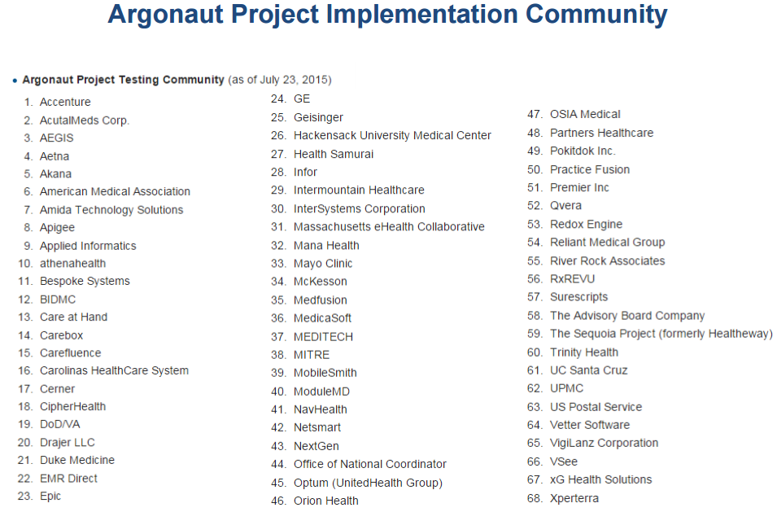
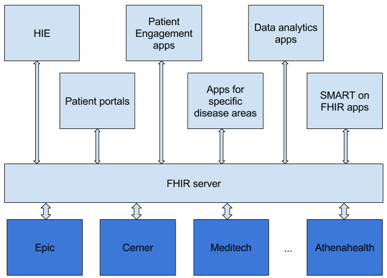
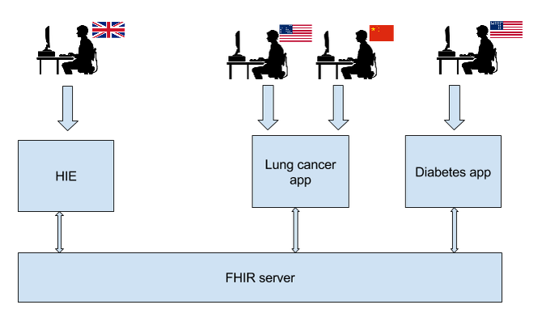

Problem
The cost of development and implementation of healthcare applications is very high
Solution
A platform for modern web and mobile healthcare applications built on top of a centralized FHIR server
It cuts cost through time to market improvements
What is FHIR®?
FHIR – Fast Healthcare Interoperability Resources – is a next generation standards framework created by HL7.
FHIR combines the best features of HL7's v2, HL7 v3 and CDA product lines while leveraging the latest web standards and applying a tight focus on implementability.
FHIR resources
These resources can easily be assembled into working systems that solve real world clinical and administrative problems at a fraction of the price of existing alternatives.
FHIR is suitable for use in a wide variety of contexts – mobile phone apps, cloud communications, EHR-based data sharing, server communication in large institutional healthcare providers, and much more.
Why FHIR is better?
- A strong focus on implementation – fast and easy to implement
- Multiple implementation libraries, many examples available
- Specification is free for use with no restrictions
- Interoperability out-of-the-box
- Strong foundation in Web standards – XML, JSON, HTTP, OAuth, etc
- Concise and easily understood specifications
Why now?
FHIR is becoming the de-facto standard for health IT
Supported by vendors and providers
Supported by ONC
A Shared Nationwide Interoperability Roadmap lists FHIR at the first place among medical standards to achieve the goal of interoperability
Milestones
- before 2011 … dark age of health IT
- 2011 … FHIR standard was introduced
- 2013 … FHIR DSTU1 was released
- 2014 … Argonaut project was started
- 2015 … ONC included FHIR into interoperability roadmap, FHIR DSTU2 was released
- 2016 … Cerner, Epic and athenahealth release SMART on FHIR app stores
- 2017 … All major EHRs expose data via FHIR API
Why FHIR platform?

You can add new apps or new functionality to the apps without changing of the back-end - FHIR offers a full data model for healthcare
Why FHIR platform?
EHR Integrations are easier - via native FHIR API or well documented mapping between FHIR and HL7 v.2/CDA
Why FHIR platform?
Different vendors or development teams can design apps sharing the same back-end with minimal coordination efforts
What can you build on top of the FHIR platform?
- patient portals
- apps targeting specific disease areas
- patient engagement apps
- data analytics apps
- HIE solutions
- SMART on FHIR apps